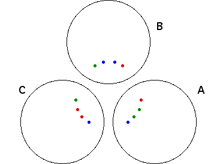
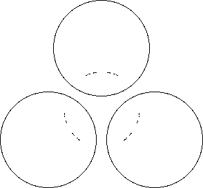

|  |
| Continuing in the same fashion, the green points in A invert to two points in C and to two points in B. |
| The red points in C invert to two points in A and to two points in B. |
| The blue points in B invert to two points in A and to two points in C. |
| So each circle contains at least 8 limit points. |
| Of course, we need not stop here. Continuing this process infinitely many steps gives an infinite set of limit points. |
| The limit points of this set are also limit points of the inversions, and taken together, they form a Cantor set of limit points. |
|  |
| So with just three circles, the limit set can be a fractal. |
Return to Three Circle Limit Sets.